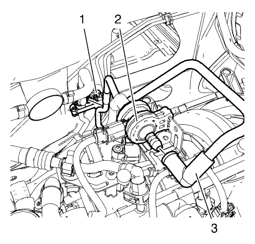
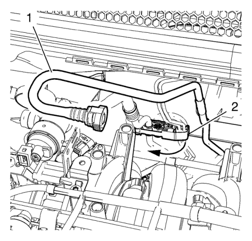
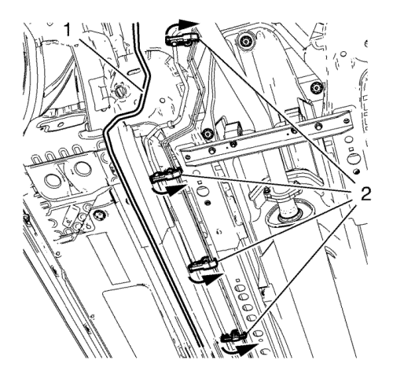

Sustitución del tubo de ventilación del depósito de combustible — LDE con servodirección eléctrica
Herramientas especiales
CH-807 Tapones de cierre
Si desea informarse sobre herramientas regionales equivalentes, consultar Herramientas especiales .
Procedimiento de desmontaje
Advertencia: Consulte Advertencia sobre la gasolina y sus vapores en la sección Prólogo.
- Abra el capó.
- Desconecte el cable negativo de la batería. Consulte Desconexión y conexión del cable negativo de la batería → sin sistema de arranque/parada.

- Retire el tubo de ventilación del depósito de combustible (3) de la válvula solenoide de purga del depósito antiimpurezas de emisión de vapores (1).

- Abra el clip del tubo de combustible (2).
- Retire el tubo de ventilación del depósito de combustible (1) del mamparo.
- Desmonte el bastidor de la suspensión delantera y del tren de rodaje. Consultar Sustitución del bastidor de la suspensión del tren anterior y del tren motriz .

- Abra los 4 clips del tubo de combustible (2).
- Retire el tubo de ventilación del depósito de combustible (1) de los bajos y del mamparo inferior.

- Desemborne el conector del tubo de ventilación del combustible del depósito de emisión de vapores (1) del tubo de ventilación del depósito de combustible (3). Consultar Servicio del adaptador de conexión rápida del collarín plástico .
- Tape el tubo de ventilación del depósito de combustible y el tubo de ventilación del combustible del depósito de emisiones con tapones CH-807.
- Abra el clip del tubo de combustible (2) y retire el tubo de ventilación del depósito de combustible.
Procedimiento de montaje
- Monte el tubo de ventilación del depósito de combustible (3) y cierre el clip del tubo de combustible (2).
- Quite los tapones CH-807 del tubo de ventilación del combustible del depósito de emisiones y del tubo de ventilación del depósito de combustible.
- Acople el tubo de ventilación del combustible del depósito de emisiones (1) al tubo de ventilación del depósito de combustible (3). Consultar Servicio del adaptador de conexión rápida del collarín plástico .
- Monte el tubo de ventilación del depósito de combustible (1) en los bajos y en el mamparo inferior.
- Cierre los 4 clips del tubo de combustible (2).
- Monte el bastidor de la suspensión delantera y del tren de rodaje. Consultar Sustitución del bastidor de la suspensión del tren anterior y del tren motriz .
- Monte el tubo de ventilación del depósito de combustible (1) en el mamparo.
- Cierre el clip del tubo de combustible (2).
- Monte el tubo de ventilación del depósito de combustible (3) en la válvula magnética de purga anti-impurezas de emisión de vapores (2).
- Conecte el cable negativo de la batería. Consulte Desconexión y conexión del cable negativo de la batería → sin sistema de arranque/parada.
- Cierre el capó.
| © Copyright Chevrolet. All rights reserved |